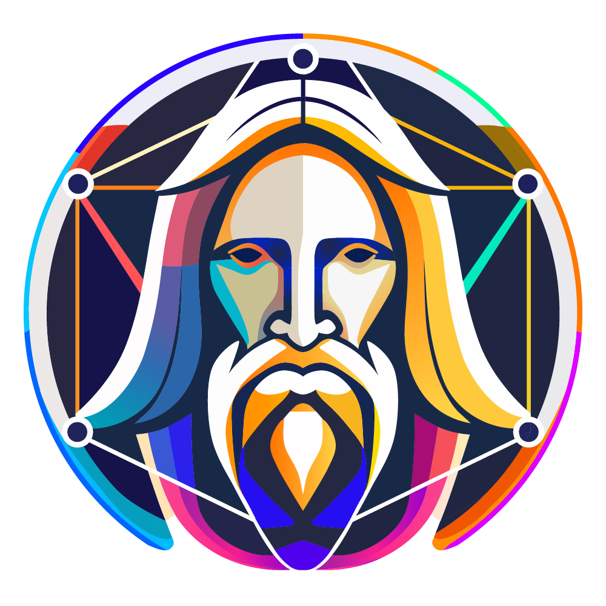

AI速報まとめ
AI紹介（できることまとめ）
A
Apple Core AI
new_feature
2026-08-23
Apple「Core AI」でできることまとめ：iPhone・Macの中だけでAIを動かす仕組み
L
LFM（Liquid AI）
new_feature
2026-08-20
LFM（Liquid AI）でできることまとめ：スマホなど端末上だけで動く小型AIに強い
S
Snowflake Cortex AI
new_feature
2026-08-19
Snowflake Cortex AIでできることまとめ：会社のデータを使ってAIを動かす「Cortex」とは
S
SwitchBot AIマインドクリップ
new_feature
2026-08-19
SwitchBot AIマインドクリップでできることまとめ：会話を自動で記録し、要約とToDoにするAIレコーダー
Drata
new_feature
2026-08-17
Drataでできることまとめ：企業のセキュリティ確認と監査対応を自動化
MiniMax Music
new_feature
2026-08-14
MiniMax Musicでできることまとめ：歌詞と雰囲気から一曲まるごと作るのに強いAI音楽生成
DeepSeek
new_feature
2026-08-13
DeepSeek（ディープシーク）でできることまとめ：低コストで賢い、コーディングと論理的な思考に強い中国の対話AI
LTX-2.5
new_feature
2026-08-13
LTX-2.5でできることまとめ：自分のPCでも動かせる、音声つき動画生成AI
Qwen
new_feature
2026-08-13
Qwen（クウェン）でできることまとめ：多言語とコーディング、画像・動画も扱えるアリババの対話AI
Wan
new_feature
2026-08-13
Wan（ワン）でできることまとめ：文章や画像から動画を作れる、Alibaba発の生成AI
Lumina
new_feature
2026-08-12
Lumina（Seedance）でできることまとめ：文章から高品質な動画を作れるByteDanceの動画生成AI
Rikyū
new_feature
2026-08-12
Rikyūでできることまとめ：伝えるだけでロゴ・Web・SNS・印刷物のデザインが揃うAI
Adobe Firefly
new_feature
2026-08-08
Adobe Fireflyでできることまとめ：商用利用しやすい画像生成に強いAdobeの生成AI
Canva
new_feature
2026-08-08
Canvaでできることまとめ：AI画像生成も使える、誰でも簡単なデザインツール
CapCut
new_feature
2026-08-08
動画編集アプリ「CapCut」のAI機能まとめ：文字起こしから自動カット、アバターまで一つのアプリで
ChatGPT
new_feature
2026-08-08
ChatGPTでできることまとめ：文章づくりから音声会話・画像・ネット検索まで一つのアプリで
Claude Code
new_feature
2026-08-08
Claude Codeでできることまとめ：ターミナルで動く自律的なコーディングに強いAnthropicのAI
Claude
new_feature
2026-08-08
Claudeでできることまとめ：長文の読み書きと自然で丁寧な文章に強いAnthropicの対話AI
Codex
new_feature
2026-08-08
Codexでできることまとめ：ターミナルで動く軽量なコーディング支援に強いOpenAIのAI
Cursor
new_feature
2026-08-08
Cursorでできることまとめ：既存コードベースを理解した編集・補完に強いAIエディタ
ElevenLabs
new_feature
2026-08-08
ElevenLabsでできることまとめ：自然な音声合成・ナレーションに強いAI
Felo
new_feature
2026-08-08
Felo（フェロー）でできることまとめ：日本語と多言語の調べものに強いAI検索
FLUX
new_feature
2026-08-08
FLUXでできることまとめ：高精細な画像生成に強く、動画（FLUX 3 Video）にも広がるAI
Gemini
new_feature
2026-08-08
Geminiでできることまとめ：Googleサービス連携とマルチモーダル理解に強いGoogleのAI
Genspark
new_feature
2026-08-08
Genspark（ジェンスパーク）でできることまとめ：指示を丸ごと片づけてくれるAIエージェント
GitHub Copilot
new_feature
2026-08-08
GitHub Copilotでできることまとめ：エディタ内のコード補完・提案に強いAI
Google AIモード
new_feature
2026-08-08
Google AIモードでできることまとめ：検索バーで会話するように調べられる新機能
Grok
new_feature
2026-08-08
Grokでできることまとめ：X（旧Twitter）連携のAIで会話・画像生成・リアルタイム検索
MiniMax H3
new_feature
2026-08-08
Hailuo AIでできることまとめ：写真を動かすMiniMaxの動画生成AI
Ideogram
new_feature
2026-08-08
Ideogramでできることまとめ：画像の中の文字をきれいに描ける画像生成AI
Kimi
new_feature
2026-08-08
Kimiでできることまとめ：長い文章の読み込みが得意なMoonshot AIの対話AI
Kling
new_feature
2026-08-08
Kling AIでできることまとめ：文章や画像から動画を作り、カメラワークまで指定できる動画生成AI

Leonardo.ai
new_feature
2026-08-08
Leonardo.aiでできることまとめ：ゲーム素材やイラスト制作に強い画像生成AI
Luma Dream Machine
new_feature
2026-08-08
Luma Dream Machineでできることまとめ：文章や写真から動画を作るLumaの動画生成AI
Lyria
new_feature
2026-08-08
Lyriaでできることまとめ：高音質なBGM・インスト生成に強いGoogleの音楽AI
Midjourney
new_feature
2026-08-08
Midjourneyでできることまとめ：文章から高品質な画像を作るAIと、作風をそろえる仕組み
Perplexity
new_feature
2026-08-08
Perplexityでできることまとめ：出典リンク付きで答えてくれるAI検索エンジン
Pika
new_feature
2026-08-08
Pikaでできることまとめ：短い動画とユニークな効果を手軽に作る動画生成AI
Recraft
new_feature
2026-08-08
Recraftでできることまとめ：ロゴやアイコンなどデザイン向けの画像生成AI
Runway
new_feature
2026-08-08
Runwayでできることまとめ：クリエイター向けの動画生成AI（最新モデルGen-4.5）
Sakana AI
new_feature
2026-08-08
Sakana AIでできることまとめ：日本発のAI研究会社。何を作っていて、何に強いのか
Sora
new_feature
2026-08-08
Soraでできることまとめ：文章や画像から動画を作るOpenAIの動画生成AI
Stable Diffusion
new_feature
2026-08-08
Stable Diffusionでできることまとめ：自分のPCでも動かせる画像生成AI
Suno
new_feature
2026-08-08
Sunoでできることまとめ：歌モノをまるごと手軽に作るのに強いAI音楽生成
Udio
new_feature
2026-08-08
Udioでできることまとめ：歌詞や雰囲気を伝えると、歌声つきの曲を作るAI音楽生成
Veo
new_feature
2026-08-08
Veoでできることまとめ：音声まで一緒に作れるGoogleの動画生成AI（Veo 3.1）
Windsurf
new_feature
2026-08-08
Windsurfでできることまとめ：AIエージェント「Cascade」を備えたコード編集エディタ